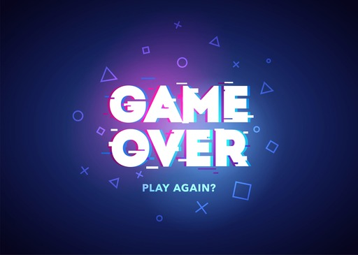

Op deze website kun je alles vinden over gamen
Wat is gamen?
Voor veel mensen is gamen het spelen van computerspellen. Dit kan op meerdere manieren. Je kunt gamen op een computer, een PlayStation of Xbox. Zelfs op een mobiele telefoon kun je al gamen. Gamen bestaat uit verschillende genres. De populairste genres zijn: actie, avontuur, role-playing games (RPG), strategie, sport en racing. Dit zijn vijf van de meest populaire genres die wereldwijd worden gespeeld.
Korte geschiedenis van gamen
Gamen begon in de jaren '50 en '60 met simpele computerspellen zoals Tennis for Two (1958). In de jaren '70 ontstond de commerciële game-industrie met Atari's Pong en vroege spelcomputers zoals de Magnavox Odyssey. In de jaren '80 werden iconische games zoals Super Mario Bros. en Pac-Man populair dankzij de Nintendo NES en arcadegames. De jaren '90 introduceerden 3D-graphics en consoles zoals de PlayStation. Vanaf de jaren 2000 groeide online gamen enorm met spellen zoals World of Warcraft. In de jaren 2010 werden VR, eSports en mobiele games populair, met titels zoals Minecraft en Fortnite. Vandaag is gamen een miljardenindustrie die wereldwijd mensen met elkaar verbindt.